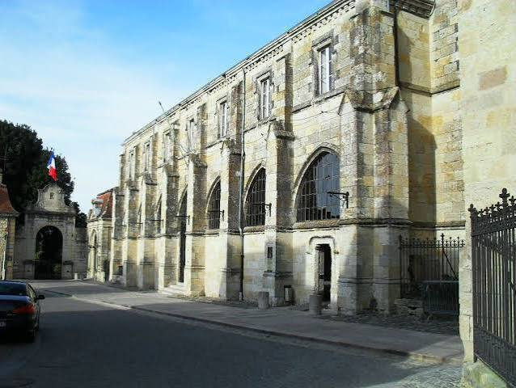

Cloître
de CondomCathédrale Saint-Pierre


⟹ Sites Emblématiques ⟸
Accolé au flanc nord de la cathédrale Saint-Pierre, le cloître de Condom est l'un des principaux vestiges de l'ancienne cité épiscopale gersoise. Il est édifié au XVIe siècle, peu après la reconstruction de la cathédrale elle-même : l'effondrement du clocher en 1507 avait entraîné un vaste chantier mené par l'évêque Jean Marre, achevé par son successeur Hérard de Grossoles, qui fait notamment bâtir la sacristie, la salle capitulaire et le cloître.

Consacré le 15 octobre 1531, cet ensemble échappe de justesse à la destruction lors des guerres de Religion : en 1569-1570, les troupes protestantes de Montgommery épargnent l'édifice contre le paiement d'une rançon de 30 000 livres réunie par les habitants de Condom. Après la Révolution et la suppression du diocèse en 1801, le cloître accueille à partir de 1883 les services municipaux, dans les anciens bâtiments de l'évêché devenus hôtel de ville.
Ses vastes dimensions et ses élégantes arcades gothiques en ont fait pendant des siècles l'un des joyaux architecturaux de la ville, réputé pour ses clés de voûte peintes et sculptées aux armoiries des seigneurs évêques.
Le cœur de l’ancienne cité épiscopale. La présence du cloître prend tout son sens dans l’histoire de Condom : née autour d’une abbaye bénédictine fondée au début du XIe siècle, la ville devient ensuite une étape importante des chemins de Saint-Jacques et le siège d’un évêché. Autour de la cathédrale se regroupaient ainsi les bâtiments nécessaires à la vie religieuse et administrative : évêché, salle capitulaire, sacristie et galeries du cloître.
Architecturalement, le cloître appartient au vaste programme de reconstruction du début du XVIe siècle. Ses galeries assuraient la circulation entre les différents espaces tout en ménageant un lieu de silence et de transition au contact de la cathédrale. Les voûtes et leurs clés armoriées constituent un précieux témoignage de la commande des évêques de Condom et de la persistance du vocabulaire gothique à l’aube de la Renaissance.
Un patrimoine aujourd’hui particulièrement fragile. Le site s’inscrit dans une importante campagne de restauration de l’ancienne cathédrale Saint-Pierre engagée en plusieurs phases. Son histoire récente rappelle que le patrimoine monumental n’est jamais figé : conservation des maçonneries, charpentes, décors et espaces du cloître nécessite un suivi constant et des interventions spécialisées.
⚠️ Suite à l'incendie accidentel du 12 juin 2026, une partie du cloître est gravement endommagée et fait l'objet d'une sécurisation puis d'une restauration de grande ampleur. L'accès à certaines galeries peut être restreint : renseignez-vous auprès de l'office de tourisme de Condom avant votre venue.
— Point de situation, à vérifier à la date de votre visiteDans la soirée du vendredi 12 juin 2026, un incendie s'est déclaré à la médiathèque municipale Yves Navarre, installée dans les anciens locaux de la mairie attenants au cloître gothique. Le feu s'est rapidement propagé dans les charpentes, mobilisant une cinquantaine de sapeurs-pompiers du SDIS 32, renforcés par le SDIS 47.
Grâce à l'intervention rapide des secours, la cathédrale Saint-Pierre et les édifices voisins, dont la sous-préfecture, ont pu être préservés des flammes.
— Bilan des services de secours, juin 2026Le sinistre a néanmoins détruit ou fortement endommagé environ 400 m² de toiture du cloître ainsi qu'une grande partie du fonds ancien de la médiathèque, riche de plus de 4 300 ouvrages datant du XVIe au XIXe siècle, parmi lesquels des documents ayant appartenu à Jacques-Bénigne Bossuet, ancien évêque de Condom. La ministre de la Culture a exprimé son soutien à la ville, et la Fondation du patrimoine a lancé une souscription nationale, sur le modèle de celle organisée pour Notre-Dame de Paris, afin de financer la sécurisation puis la restauration du monument.
Abbaye de Flaran à 8 km, cette abbaye cistercienne du XIIe siècle prolonge la découverte du patrimoine roman et gothique gersois.
Collégiale de La Romieu à une vingtaine de kilomètres, un autre joyau du Gers inscrit à l'UNESCO au titre des chemins de Compostelle.
Quartier ancien de Condom ruelles et maisons à pans de bois autour de la cathédrale, cœur historique de la sous-préfecture du Gers.
Vignoble d'Armagnac Condom est la porte d'entrée du pays d'Armagnac, propice à la découverte des chais alentour.